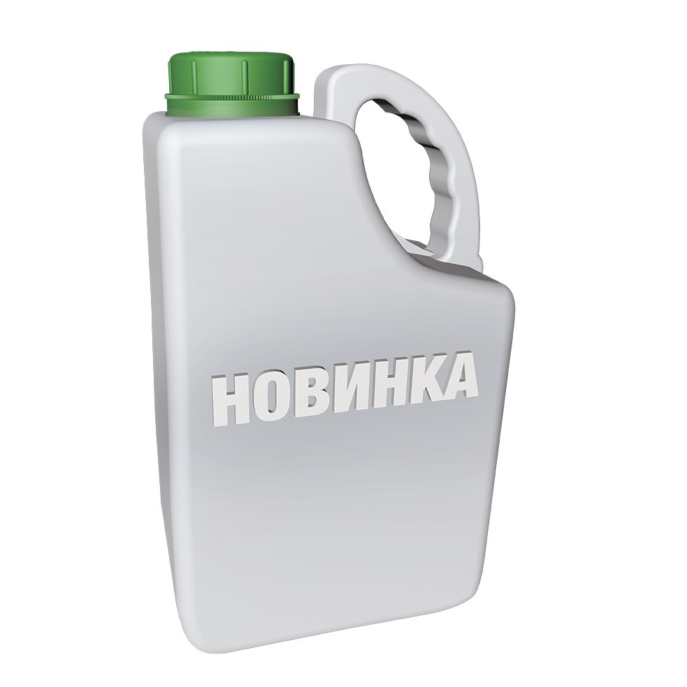

ПЕРЕХРЕСТЯ УСПІШНИХ РІШЕНЬ
паспорт препарату
Аксіал® Крос 050 ЕС, к. е.
45 г/л піноксадену + 5 г/л флорасуламу + 11,25 г/л антидоту (клоквінтосет-мексилу)
Фенілпіразоліни + триазолпіримідини
Концентрат емульсії
Класифікація ВООЗ: II
5 л
Фото упаковки

головні переваги препарату
- Перший гербіцид на ринку з крос-спектром на ячмені ярому та озимому
- Kомплексний контроль однорічних злакових і дводольних бур’янів у посівах зернових культур
- Можливість застосовувати навесні і восени
- Широке вікно застосування від початку кущення до прапорцевого листка культури
- Не має післядії у сівозміні
Застосування препарату
ПШЕНИЦЯ ОЗИМА, ЯЧМІНЬ ОЗИМИЙ, ЯЧМІНЬ ЯРИЙ
Спектр дії
Фаза внесення
Норма витрати, л/га
- 0,7 л/га (осіннє застосування (бур’яни на початкових стадіях розвитку, в основному злакові та деякі головні дводольні)
- 0,9 л/га (весняне застосування (перерослі бур’яни, в основному дводольні та головні злакові)
Кратність обробок / Термін очікування
Досконала формуляція
НЕ ПОТРЕБУЄ ДОДАВАННЯ БУДЬ-ЯКИХ ПАР (поверхнево активних речовин). До складу формуляції включено новітню ПАР Адігор — метиловий ефір ріпакової олії, який сприяє кращому розтіканню та проникненню препарату Аксіал
Ефективність ПРОТИ ДВОДОЛЬНИХ БУР’ЯНІВ ВОСЕНИ
| Вид бур’яну | Аксіал® Крос 0,7 л/га | Аксіал® Крос 0,9 л/га |
| Роман польовий | 99,6 | 99,2 |
| Грицики звичайні | 100 | 100 |
| Волошка синя | 89,2 | 100 |
| Кучерявець Софії | 93,4 | 92,4 |
| Підмаренник чіпкий | 86,7 | 94,4 |
| Герань розсічена | 85 | 85 |
| Ромашка лікарська | 99,8 | 99,8 |
| Ромашка непахуча | 100 | 100 |
| Незабудка польова | 84,9 | 97,5 |
| Мак-самосійка | 99,4 | 100 |
| Гірчиця польова | 99 | 99 |
| Зірочник середній | 98,9 | 99,6 |
| Талабан польовий | 97,5 | 100 |
| Падалиця ріпаку | 99,8 | 99,8 |
| Глуха кропива пурпурова | 60,6 | 72,3 |
ЕФЕКТИВНІСТЬ ПРОТИ ШИРОКОГО СПЕКТРА ОДНОРІЧНИХ ДВОДОЛЬНИХ БУР’ЯНІВ НАВЕСНІ
| Вид бур’яну | Аксіал® Крос |
| Роман польовий | 100 |
| Курячі очка польові | 100 |
| Приворотень польовий | 99,3 |
| Грицики звичайні | 98,9 |
| Волошка синя | 97,8 |
| Кучерявець Софії | 100 |
| Витка гречка березкоподібна | 99,1 |
| Підмаренник чіпкий | 98,3 |
| Латук дикий | 95 |
| Ромашка (види) | 99,3 |
| Незабудка польова | 98,3 |
| Мак-самосійка | 96,8 |
| Спориш звичайний | 97 |
| Редька дика | 98,3 |
| Гірчиця польова | 98 |
| Сухоребрик лікарський | 100 |
| Зірочник середній | 99,3 |
| Талабан польовий | 98,9 |
| Триреберник непахучий | 95,8 |
| Падалиця ріпаку | 99,7 |
Слабкочутливі до Аксіал® Крос бур’яни
- Вероніка (види)
- Фіалка (види)
- Гірчак шорсткий
- Лобода біла
- Рутка лікарська
- Переліска однорічна
- Петрушка собача
Для комплексного контролю однорічних злакових та слабкочутливих до аксіал® крос дводольних бур’янів рекомендується застосовувати бакову суміш Аксіал® + Дербі™
СУМІСНІСТЬ
Аксіал® Крос 050 ЕС, КЕ можна змішувати із широким спектром гербіцидів та з більшістю фунгіцидів, інсектицидів, регуляторів росту рослин, добрив, мікроелементів. Для розширення спектра ефективності можна змішувати з флуроксипіром, іоксинілом, бромоксинілом, флорасуламом.
Аксіал® Крос сумісний із фунгіцидами Амістар® Екстра, Амістар® Тріо, Тілт®, Тілт® Турбо, Альто® Супер, Елатус® Ріа, з інсектицидами Енжіо®, Карате® Зеон, з регулятором росту Моддус®. При використанні бакових сумішей пестицидів слід дотримуватися рекомендацій компанії-виробника щодо сумісності кожного препарату-компонента бакової суміші. У кожному конкретному випадку слід перевіряти препарати на сумісність.
ТЕМПЕРАТУРА ЗАСТОСУВАННЯ
Аксіал® Крос ефективний вже при +5 °С. Оптимальна температура застосування — від +10 °С до +25 °С.
Не рекомендується використовувати препарат, коли рослини перебувають у стресовому стані та при різких коливаннях температури протягом дня. Не рекомендується застосовувати препарат, якщо очікується зниження температури нижче за +5 °С або приморозки. Обробку слід розпочати після встановлення стабільного рекомендованого температурного режиму протягом 2 днів.
РЕКОМЕНДОВАНА НОРМА ВИТРАТИ РОБОЧОГО РОЗЧИНУ
200–250 л/га.
Аксіал® Крос нечутливий до ультрафіолетового випромінювання, ефективний в екстремальних сухих умовах, не вимагає вологості ґрунту або сонячного світла для активації. Гербіцид дозволено застосовувати в широкому діапазоні розвитку культур — BBCH 11–39. Завдяки цій гнучкості його застосовують на ранніх стадіях або в складних ситуаціях аж до пізньої осені при температурі +5 °С. Через 30 хв. після внесення не змивається дощем. Бур’яни зупиняють ріст через 48 год. після обробки, стають хлоротичними, повна їх загибель настає через 1–3 тижні. Гербіцид забезпечує високий рівень активності проти злаків і дводольних бур’янів і при осінньому, і при весняному застосуванні. У більшості випадків рекомендована норма витрати — 0,7 л/га восени. Навесні по перерослих злакових і дводольних бур’янах (більше за 4 листки) норма — 0,9 л/га. За наявності в посівах важко контрольованих дводольних бур'янів, як-от вероніка (види), фіалка (види), гірчак шорсткий, рутка лікарська, переліска однорічна, петрушка собача, рекомендується замінити Аксіал® Крос на суміш Дербі™ 0,07 кг/га + Аксіал® 0,9 л/га.
СЕЛЕКТИВНІСТЬ
Дозволений до використання на більшості зернових культур. Нефітотоксичний до культури навіть у разі застосування подвійної норми внесення. У разі загибелі з невідомих причин культури, обробленої гербіцидом, дозволяється одразу пересів ярою пшени- цею, ярим ячменем, житом або кукурудзою.
КОМЕНТАРІ
Якщо рослини перебувають під впливом стресів навколишнього середовища (температура нижче за +3 °С або приморозки до або після внесення гербіциду), іноді може спостерігатися хлороз на піхвах/усередині окремих листків. Рослини набирають нормального вигляду протягом 1–2 тижнів після появи. Названі симптоми не мають негативного впливу на урожай.